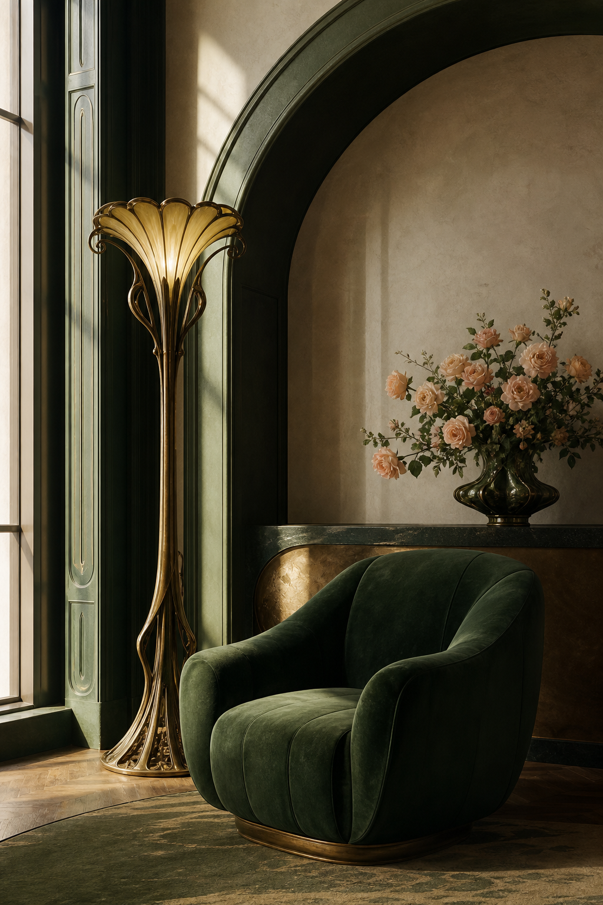
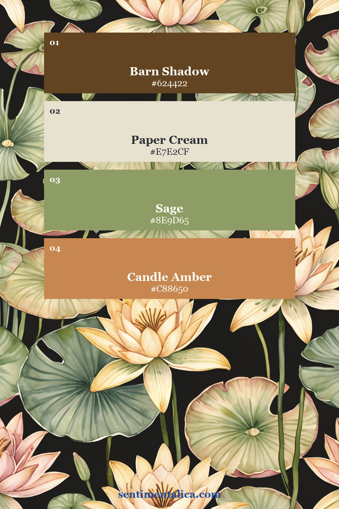
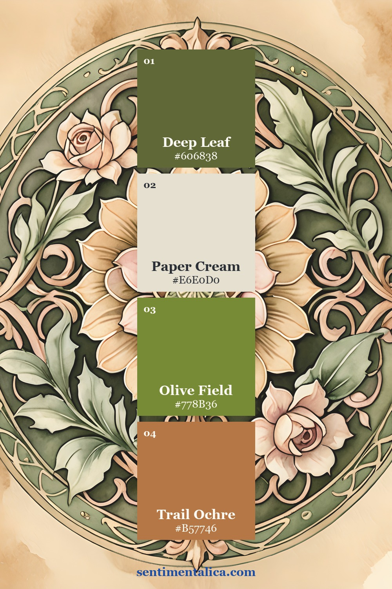
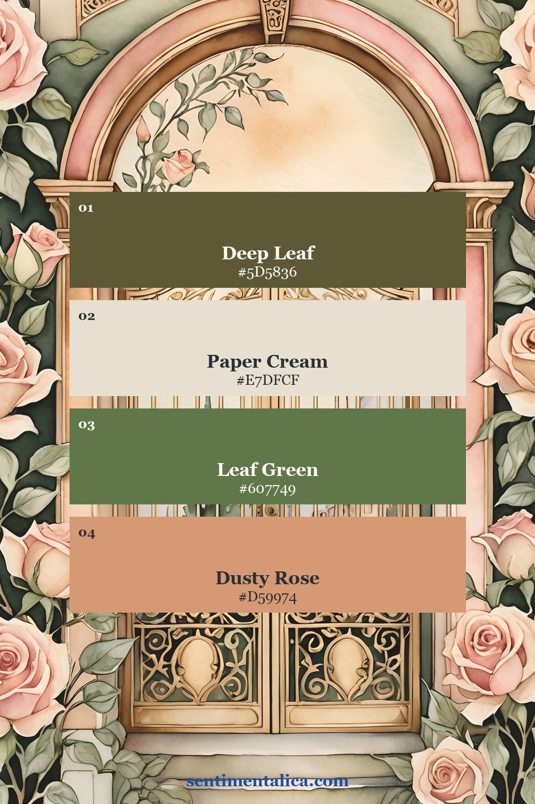
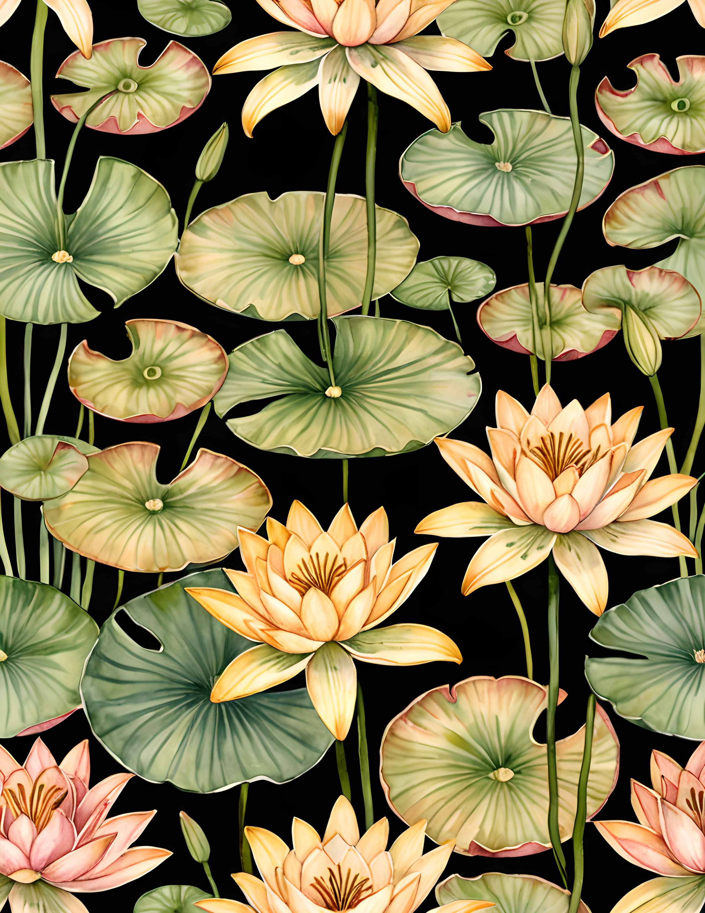
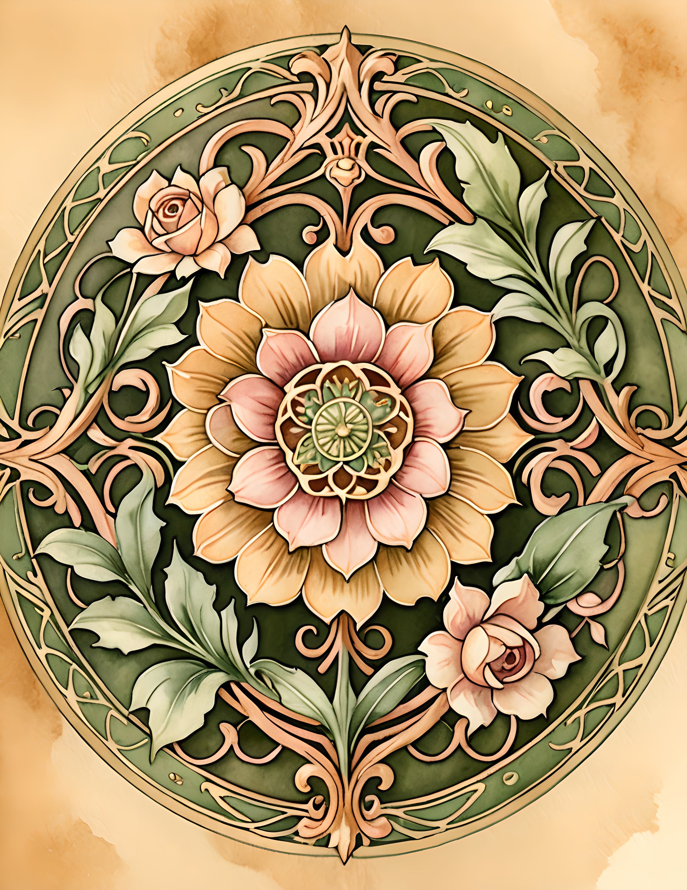
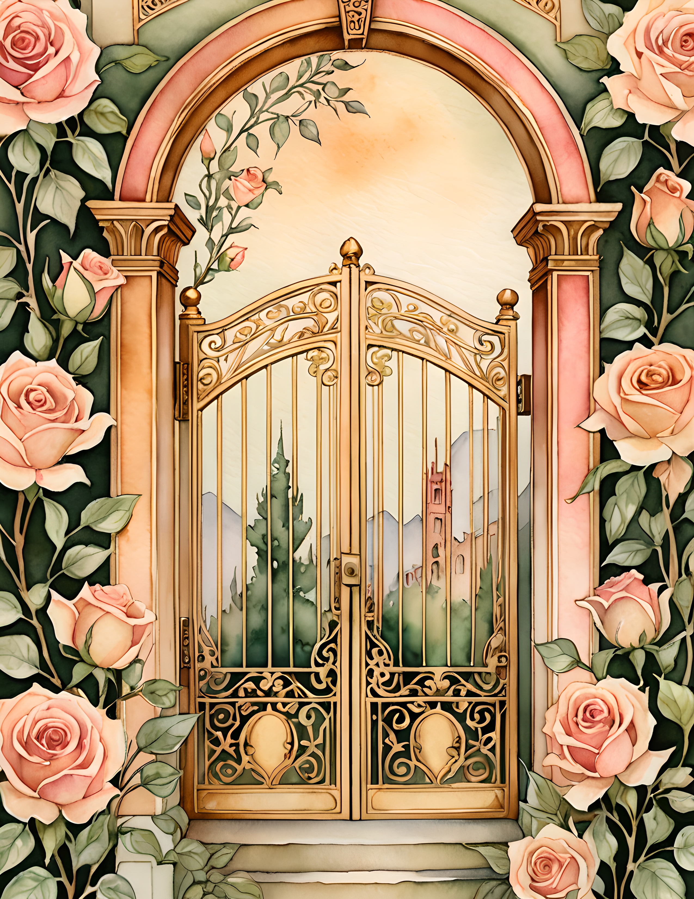

A feminine journal page does not have to be pale, crowded with flowers, or endlessly delicate. It can be romantic and still have presence. If your pages keep turning out pretty but strangely timid, the problem is usually not the imagery. It is that every element has been asked to whisper at the same volume.

The simplest way to give a feminine page more strength is to build it around three roles: an anchor, a light, and a gesture. The anchor gives the eye somewhere to land. The light creates breathing room. The gesture adds movement. Once those roles are clear, lace, watercolor, ribbon, and ornate details can belong without making the spread sugary.
Begin with one image that is allowed to lead
Choose one visual element and make it noticeably larger than everything around it. It might occupy half a page, reach beyond an edge, or sit alone with generous space beside it. Avoid surrounding it immediately with several equally important pieces.

This is the anchor. It does not need to be dark, but it should have enough scale or contrast to hold the composition. When another embellishment tempts you, ask whether it supports the anchor or merely fills an empty patch.
Let the quiet parts stay quiet
Empty space often turns romantic decoration into a confident composition. Leave a strip of plain paper visible. Keep one corner almost bare. Place journaling on a simple cream scrap instead of another patterned layer.

You can also create quiet through color. Choose one clean light neutral and repeat it in two or three places: a writing card, narrow border, and small label. Repetition makes the page feel composed while the light areas keep it readable.
Add contrast through texture, not more subjects
When a page feels unfinished, try changing the texture instead of adding another picture. Put a torn edge beside a clean cut. Pair thin paper with a heavier tag. Run one dark thread across a soft wash. Add a piece of lace next to an unadorned label.

A useful limit is one dominant image, one supporting image, and one tactile detail. Anything after that should earn its place by holding a memory, adding a word, or improving the balance.
A ready visual world for the method
If you would rather begin with imagery that already belongs to one family, the Nouveau Goddess commercial-use watercolor image pack can supply a coherent starting point. Choose one page with a clear focal point, one quieter page for breathing room, and one contrasting detail.



Print the page you want to lead at the largest useful size. Use the quieter page for a pocket, writing space, or narrow border. Cut only one small detail from the third page. This keeps the work connected without turning it into a catalogue of everything you printed.
Try this three-layer page recipe
- Foundation: place the main image away from the exact center, leaving one calm margin.
- Memory layer: add a writing card, photograph, quotation, or date that gives the page a reason to exist.
- Gesture: finish with one directional detail—a thread, torn strip, ribbon, pencilled line, or repeated motif.
Then look from across the room. If the main idea is clear, it is finished. If your eye jumps between five places, remove the smallest decorative piece. The goal is not to make femininity harder or darker than it wants to be. It is to give it structure.
For more gentle composition ideas, browse the Sentimentalica journal archive.